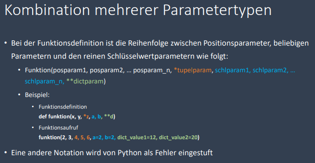
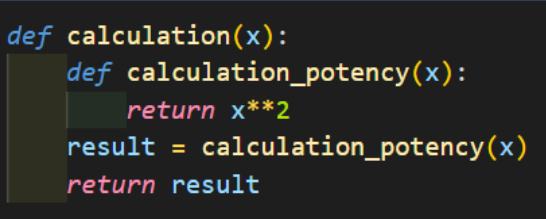
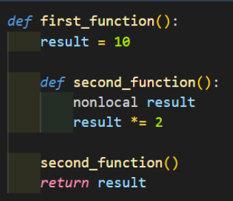
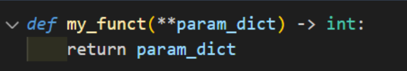

Funktionen
Funktionen können selber aus mehreren Bestandteilen bestehen: - Variablen - Datenstrukturen - If-Else-Struktur - Schleifenstrukturen - Eingaben - Dateiverarbeitung - Funktionen
Parameter Reihenfolge
- Positionsparameter
- n-Parameter(Tupel)
- Schlüsselwertparameter
- n-Parameter(Dictionary)

Parameterdefinitionen
Positionsparameter
- Die Parameter bei den Funktionen in der bisherigen Notation sind sog. Positionsparameter
- Die Übertragung von Argumenten in der Funktionsschnittstelle ist durch die Positionsparameter in einer definierten Reihenfolge
- Beispiel: math.pow(x, y)
- x ist der erste Positionsparameter (Basis der Potenz)
- y ist der zweite Positionsparameter (Exponent der Potenz)
- Bei eigenen Funktionen sind die Parameter ohne weitere Angaben Positionsparameter
- Positionsparameter sind obligatorisch für den Funktionsaufruf
optionale Parameter
- Optionale Parameter werden in der Funktionsdefinition als Parameter definiert, die optional sind
- Bei dem Funktionsaufruf müssen sie nicht (!) mit angegeben werden
- Sie werden mit 0 oder mit ““ oder mit None als Platzhalter angegeben
- Beispiel: def funktion(x, y=0, z=None)
Schlüsselwertparameter
- Schlüsselwertparameter treten bei dem Funktionsaufruf auf
- Bei dem Funktionsaufruf werden die Parameternamen der Funktion explizit aufgerufen
- Die Reihenfolge der Schlüsselwertparameter untereinander ist hierbei irrelevant
- Beispiel: ergebnis = funktion(x=1,y=2)
beliebige Parameteranzahl (Tupel)
- In Python ist es möglich eine beliebige Parameteranzahl zu programmieren
- Die Datenstruktur in der beliebigen Parameteranzahl über * gespeichert wird ist das Tupel
- Diese Parameteranzahl kann 0 bis n betragen
- Beispiel: def funktion(*parameter)
beliebige Parameteranzahl (Dictionary)
- Die Datenstruktur in der beliebigen Parameteranzahl über ** gespeichert wird ist das Dictionary
- Diese Parameteranzahl kann 0 bis n betragen
- Beispiel: funktion(**parameter)
reine Schlüsselwertparameter
- Die sog. reinen Schlüsselwertparameter treten in Kombination mit dem Parametertyp der beliebig viele Werte in einem Tupel speichert
- Jeder Parameter, der nach diesem Parametertyp gespeichert wird ist ein sog. Schlüsselwertparameter
- Beispiel: def funktion(*a, rein_schl1, rein_schl2)
- Bei dem Funktionsaufruf müssen sie wie normale Schlüsselwertargumente aufgerufen werden
- Beispiel funktion(2, 3, 4, rein_schl1 = 10, rein_schl2 = 6)
Namensräume
Es gibt - globale Variablen/ Funktionen und - lokale Variablen/ Funktionen
Die Namen der Variablen können identisch sein, da sie verschiedenen Namensräumen zugeordnet sind
Lokale Referenz
- sobald eine Funktion und ihre lokale Variable die globalen Variable überschreiben will, entsteht dadurch eine sog. Lokale Referenz
- Diese lokale Referenz kann die globale Variable nicht überschreiben
global
generiert einen Schreibzugriff auf eine globale Variable s 
nonlocal
kann auf lokale Variablen eines höheren Geltungsbereich zugreifen

Anonyme Funktion
- besitzen keinen Funktionsnamen
- werden durch das Schlüsselwort lambda eingeleitet
- innerhalb von anderen Funktionsaufrufen können anonyme Funktionen als Parameter eingetragen werden
lambda
Annotationen
sind Anmerkungen, die bei einer Funktion angegeben werden können
__annotations__

Rekursion
ist eine Programmiertechnik, indem eine Funktion sich selbst ein oder mehrmals in ihrem Funktionskörper (body) aufruft